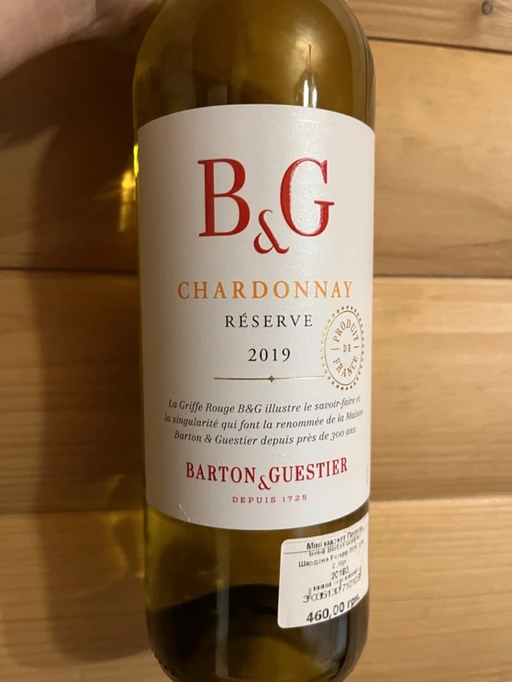

- Type
- White Still, Dry
- Producer
- Barton & Guestier
- Vintage
- 2019
- Location
- France, IGP Vin de Pays d’Oc
- Grapes
- Chardonnay
- Alcohol
- 13.5
- Sugar
- NA
- Price
- 460 UAH
- Cellar
- N/A
Ratings
2022-05-20 - 5.00
My expectations where low and luckily I was not disappointed. Mediocre fruity Chardonnay that tries to stay in a ‘healthy’ dry zone while satisfying off-dry lovers. Stone fruits, peach and subtle hints of butter. Restrained nose. Viscose, off-dry palate with powerful finish of crushed apple seeds. Not bad, not good, just something to consume and forget about. IMO, the price tag must be cut in half, $15 is a rip off for this.